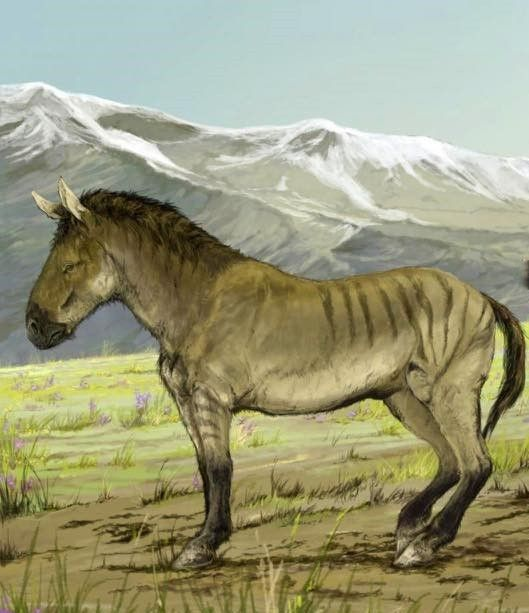

Información
Tamaño
menor que un caballo doméstico
Extinción en Murcia
siglo XVI
Descripción
El encebro fue un caballo salvaje o animal parecido al caballo que, según muchos autores medievales, vivió en la península ibérica hasta el siglo XVI.
Las fuentes medievales lo describen como un animal de color ceniciento con una franja dorsal, más pequeño que los caballos domésticos y difícil de domar.
Los investigadores modernos desconocen a qué especie pertenecía. Las cuatro teorías principales son que el cebro era un caballo salvaje autóctono, posiblemente emparentado con la raza Sorraia, el extinto asno salvaje europeo, otro nombre para el asno salvaje asiático, o un équido salvaje.